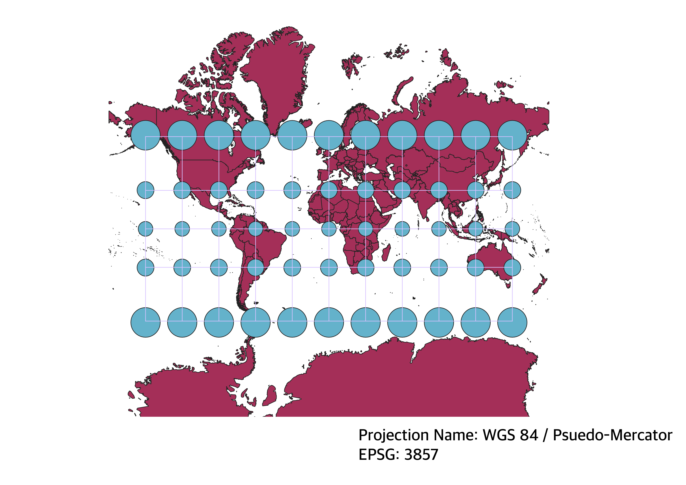
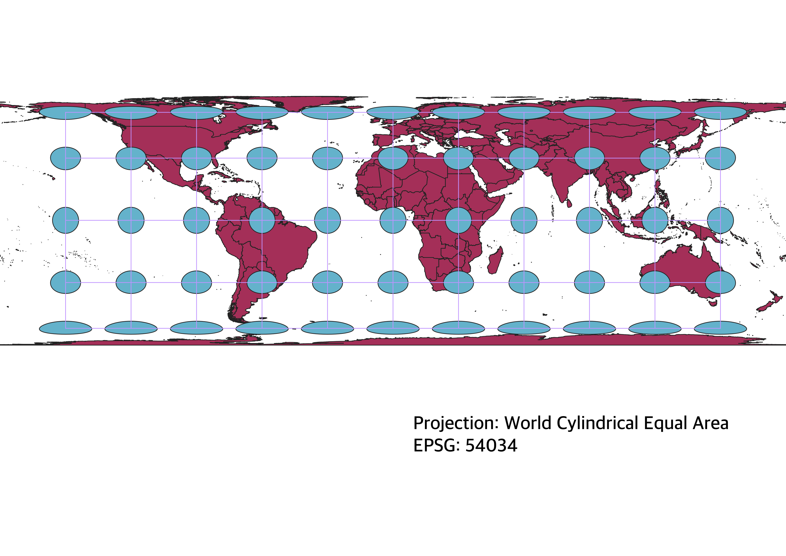
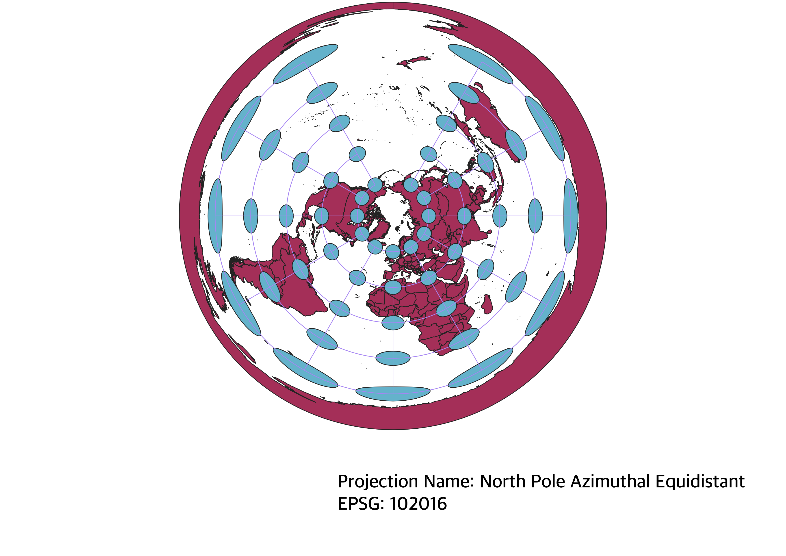
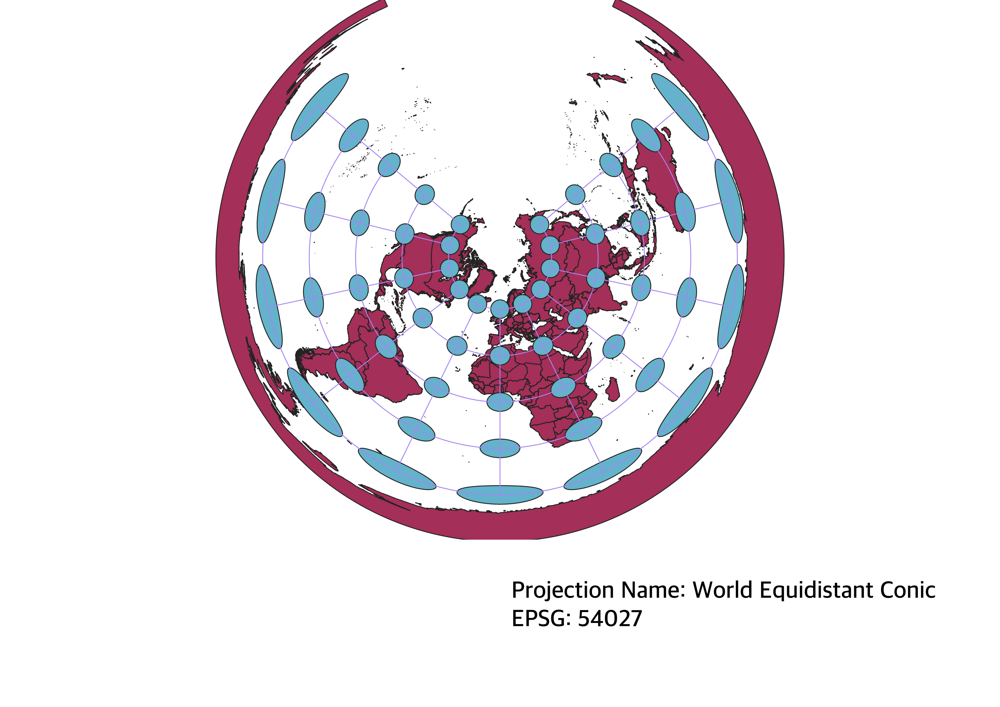
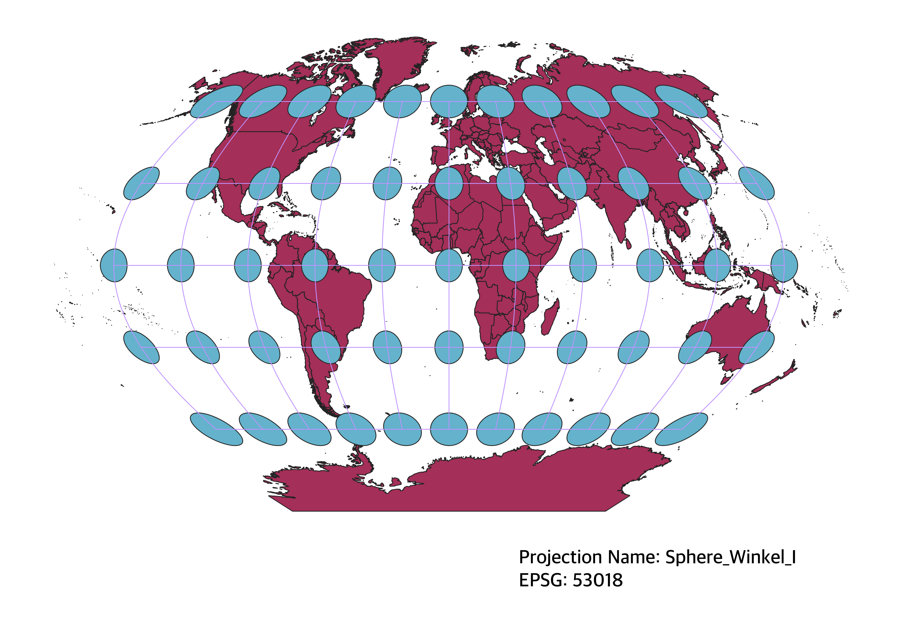
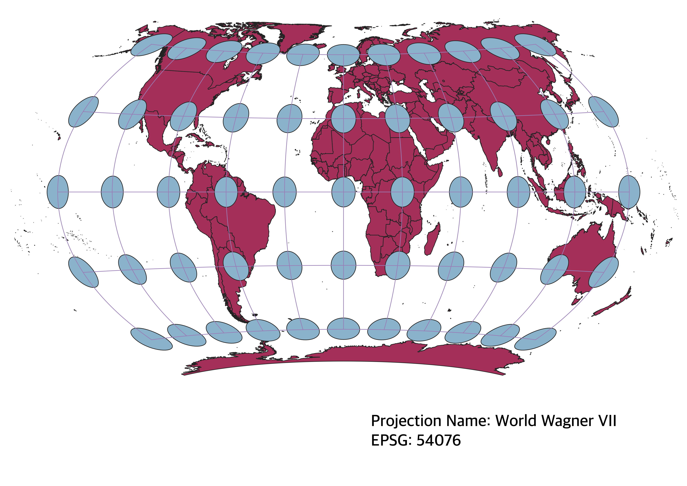
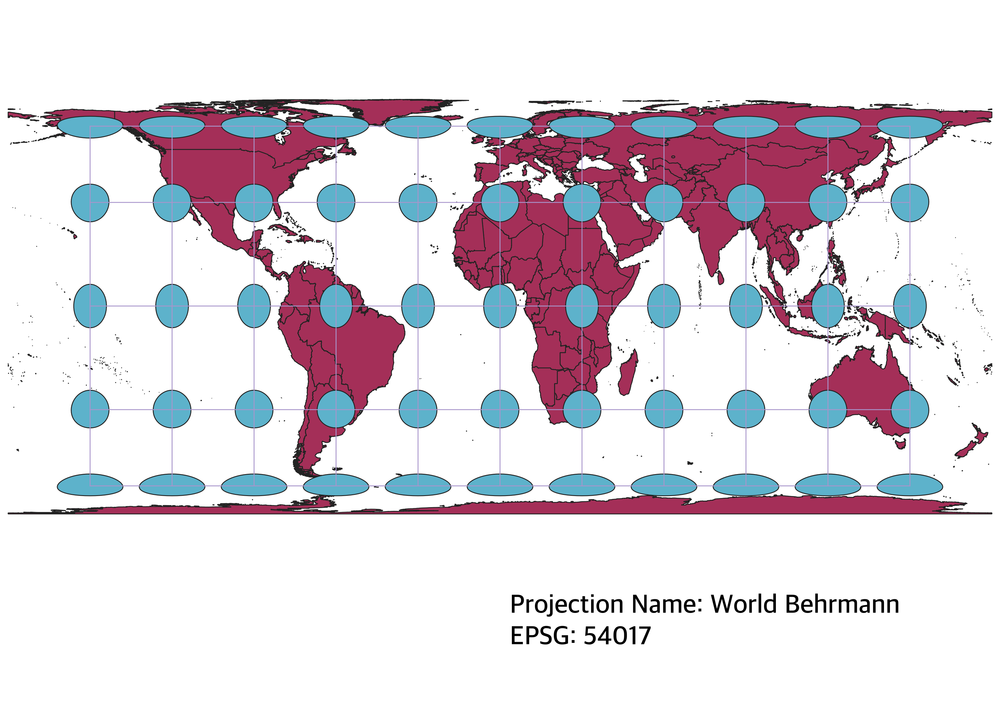

In this project, I learned how to display world maps in different projections using QGIS.
How did I do this?
write paragraph here
WGS84 Projection
This map projection is quite common and is what many of us are used to; in fact, I have a Mercator map on my bedroom wall. It is notorious for distorting the poles, making Greenland appear much larger than it is. It preserves direction, which is why it is good for navigation and is the primary map projection in GPS.

World Cylindrical Equal Area Projection
This map preserves area, of course, but greatly distorts shape as it gets closer to the poles, making the poles appear squished. Africa has a more accurate representation in size compared to the WGS84 projection. Other countries near the equator are accurate as well.

North Pole Azimuthal Equidistant Projection
This map is quite different from the two-dimensional maps most are used to, as it appears we are looking down at the north pole of the Earth. It is rounded, showing the sphericity of the Earth. It preserves distance, of course, as well as direction. But shape and area are distorted as it moves out from the center.

World Equidistant Conic Projection
This one looks similar to the North Pole Azimuthal projection, but the distances appear differently than they do in the latter, which is interesting to note as they are both equidistant. The shape and area become more distorted as it moves away from the center.

Sphere Winkel I Projection
This map distorts area and shape and is non-conformal. Thus, it might not be of great use to navigators; however, it is still pleasing to the eye, it does not look all that wonky. It does appear to stretch shapes as it gets closer to the poles, making the tail of South America look very long.

World Wagner VII Projection
This map preserves area, but distorts shape, direction, distance, and angles. The distorted angles are quite evident at the poles and edges of the map. The poles appear squished and sort of inverted.

World Behrmann Projection
This map projection preserves area, but distorts shape, as the poles appear squished. It also distorts distance, angle, and direction. Perhaps it could be used for large-scale maps; it is not totally unpleasing to the eye.
